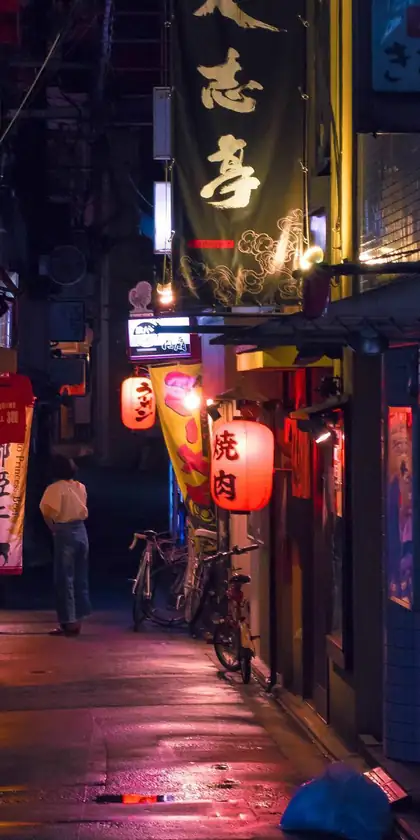

Projects
Night-Shift
Studio
Hand over an ad order at night.
By morning there is a board of checked creative directions.
And a plain list of anything it could not verify.
Ishinuki
Daikie
Read the case study
→